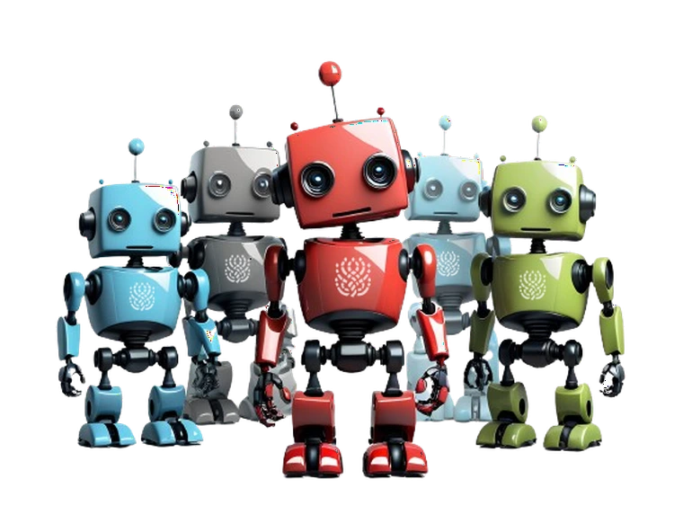

A free, community-powered generation service: volunteers share spare computer power so anyone can generate images and text.
Powered by open-source image generation workers and text generation workers.

Funded by donations from the public, and NLnet / NGI0 Core (Next Generation Internet).
Run by Haidra, a community-based volunteer-run non-profit. Read our mission.
First register an account which will generate an API key. Store that key somewhere safe - treat it like a password.
The easiest way to use AI Horde is through one of our user-friendly frontends. We recommend starting with ArtBot - a popular web-based client that's perfect for beginners.
Join our Discord server - it's the best and most active place to ask questions, get support, and connect with the AI Horde community!
Join Discord Community